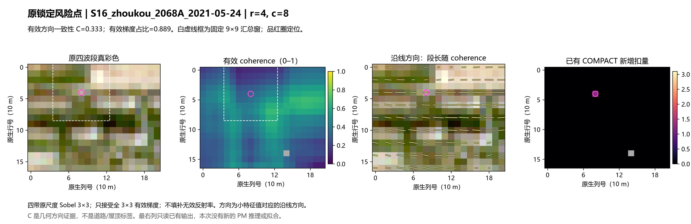
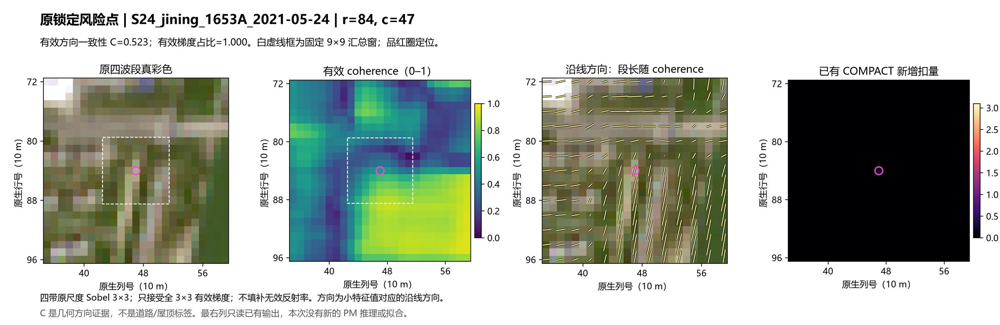
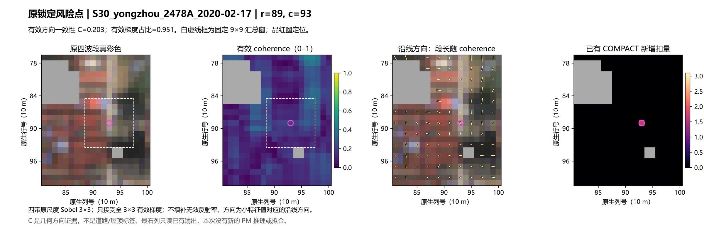
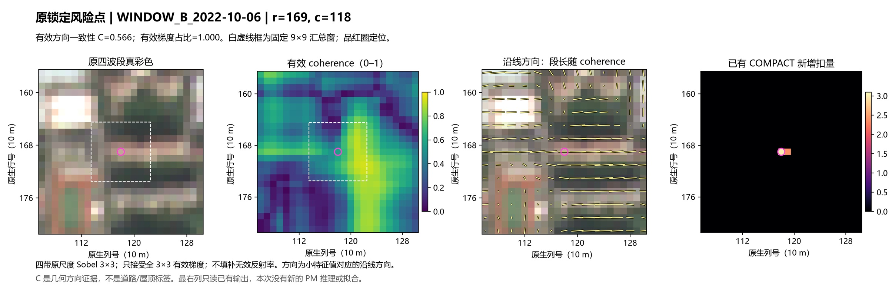
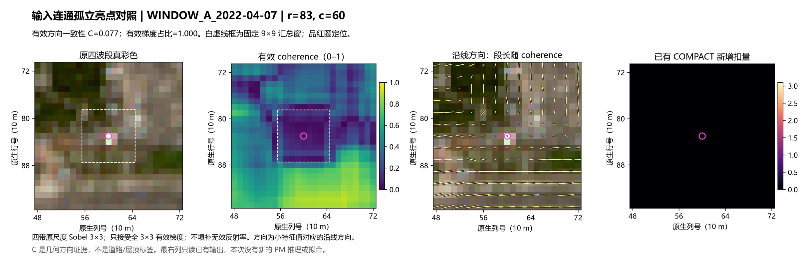
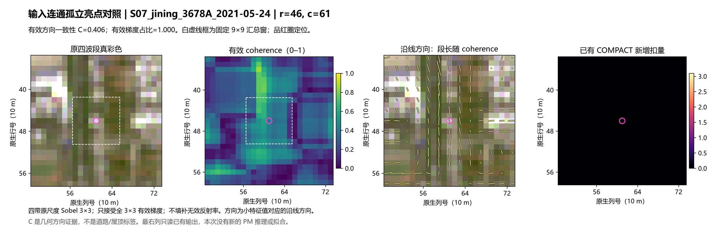
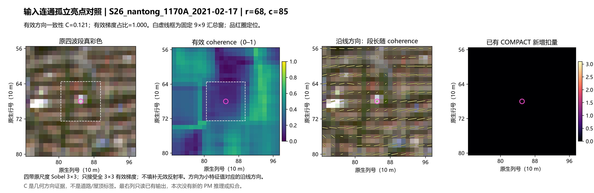

原生 10 m 输入中的方向连续性
206 场只读输入诊断：固定四带、3×3 有效梯度、9×9 汇总，不调窗口，不训练，也不生成新的 PM。
济宁浅条恢复了中等方向证据，周口有一定信号；同样的特征也对屋顶边缘有响应。它能够描述旋转方向和亮度起伏中的局部排列，但不能单独区分道路与屋顶。
| 风险点 | 新 C | 原几何 | 有效梯度占比 |
|---|---|---|---|
| S16_zhoukou_2068A_2021-05-24 | 0.333 | 0.000 | 0.889 |
| S24_jining_1653A_2021-05-24 | 0.523 | 0.000 | 1.000 |
| S30_yongzhou_2478A_2020-02-17 | 0.203 | 0.417 | 0.951 |
| WINDOW_B_2022-10-06 | 0.566 | 0.083 | 1.000 |
原 231 个地图交格中，77 格 C≥0.5。建筑面积分数≥0.5 且 Pbuilding≥0.5 的 726 个已变动格中，也有 201 格 C≥0.5。后者只称建筑代理组，并非人工核实屋顶真值。如果直接以 C 作为保护权重，约 38.2% 的原新增扣量会落在这类连续权重上；这只是输入权重暴露量，没有执行该候选。
三个输入连通孤立亮点按原始输入独立锁定，未按 C 选低分；它们不要求是 COMPACT 新增处理的位置。风险点、原 30 对象和完整对象/像元表均保留。
结构张量定义及特征值一致性：OpenCV 官方教程；局部梯度外积说明：scikit-image 官方文档。四带汇总与有效域权重为本次固定适配。
锁定风险点 · S16_zhoukou_2068A_2021-05-24


锁定风险点 · S24_jining_1653A_2021-05-24


锁定风险点 · S30_yongzhou_2478A_2020-02-17


锁定风险点 · WINDOW_B_2022-10-06


连通孤立亮点对照 · WINDOW_A_2022-04-07


连通孤立亮点对照 · S07_jining_3678A_2021-05-24


连通孤立亮点对照 · S26_nantong_1170A_2021-02-17
